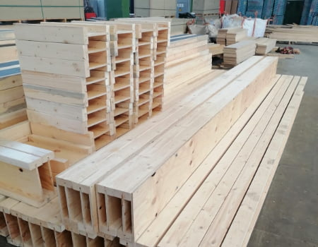

Gamyba
Gamybos ceche gaminame pastatų konstrukcijas iš medienos arba
plokščių, šiltinimo medžiagos - polistireninio putplasčio. SIP skydus
naudojamus Jūsų pasirinkto pastato dugnui, išorinių sienų ir stogo
konstrukcijoms įrengti. Kombinuotas dvitėjines medines sijas, kurios
reikalingos perdangoms, stogo ar sąramų bei svarbių konstrukcinių
vietų sustiprinimui. Gaminame ir komplektuojame įvairaus dydžio ir
architektūros gyvenamuosius namus ar kitokios paskirties pastatus -
šiltus gamybinių, paslaugų, prekybos ar rekreacijos paskirties pastatų
priestatus, rekonstravimo ar statybos objektus. Medinės kombinuotos
dvitėjinės sijos naudojamos dugno, sienų ir stogo įrengimui.
Pagrindinė dvitėjinių sijų gamybos medžiaga yra mediena. Juostos
gaminamos iš kalibruotos spygliuočių medienos. Vidurinių jungiamųjų
sienelių gamybai naudojamos fanera arba orientuotų skiedrų plokštės,
kurios išilgai sujungiamos užlaidais ir suklijuojamos. Sijos gali būti
pagamintos pagal specialų užsakovo pageidavimą medžiagoms ar
gabaritams. Gali būti šiltintos polistireniniu putplasčiu.
Gamybos etapai:
- Polistireninio putplasčio supjaustymas;
- Plokščių ir polistireninio putplasčio klijavimas;
- Skydų presavimas;
- Pagal techninį projektą - skydų pjaustymas;
- Jungiamųjų elementų komplektavimas;
- Blokų sukomplektavimas ir paruošimas gabenimui.
